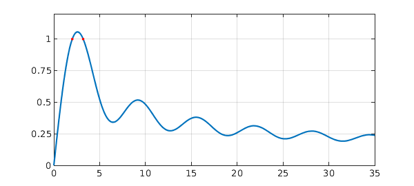
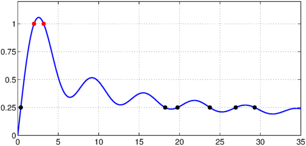

This example shows how easy it is to solve one of the example problems from the Oxford MSc in Mathematical Modelling and Scientific Computing week 0 MATLAB 'Crash Course' using Chebfun. (And also how easy it is to make a Chebfun Example!).
Problem. For what values of $a$ does
$$ I(a) = \int_{-1}^1 \sin(x) + \sin(a x^2) dx = 1 ? $$
Solution. Define the integrand as a function of $x$ and $a$.
F = @(x,a) sin(x) + sin(a*x.^2);
For a given $a$, we can compute the integral using Chebfun's sum command.
I = @(a) sum(chebfun(@(x) F(x,a)));
We compute a chebfun of this result, for $a$ ranging from $0$ to $100$.
Ia = chebfun(@(a) I(a),[0 100],'vectorize');
The 'vectorize' flag is used, since $I$ can not be evaluated with a vector.
We use Chebfun's roots command to find where $I(a)=1$.
r = roots(Ia-1)
r = 2.011698636650794 3.199526913460082
We plot this, to make sure it looks sensible.
LW = 'linewidth'; MS = 'markersize'; plot(Ia,LW,1.6), hold on, grid on axis([0 35 0 1.2]), set(gca,'ytick',0:.25:1) plot(r,Ia(r),'.r',MS,20);

Since we have $I(a)$ as a chebfun, we can do other things, like find where $I(a) = 0.25$
r = roots(Ia-0.25) plot(r,Ia(r),'.k',MS,20), hold off
r = 0.378866771015907 18.225950880000603 19.761174831761753 23.753831561562048 26.956276286229929 29.291546747613694

or the value of $a$ which maximises $I(a)$
m = max(Ia)
m = 1.056688680049085
or the standard deviation of the gaps between the local minima for $a\in [0,100]$.
[y x] = min(Ia,'local'); f = std(diff(x(2:end-1)))
f = 0.008984009280336